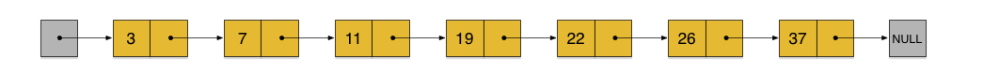

Redis
参考文章链接：
整体架构： https://blog.csdn.net/weixin_45017459/article/details/115802399?spm=1001.2014.3001.5501
String 部分：https://blog.csdn.net/qq_41446768/article/details/98969850
Zset 部分：https://blog.csdn.net/weichi7549/article/details/107335133/
淘汰策略部分：https://zhuanlan.zhihu.com/p/105587132
一、概述
Redis 是速度非常快的非关系型（NoSQL）内存键值数据库，可以存储键和五种不同类型的值之间的映射
键的类型只能为字符串，值支持五种数据类型：字符串、列表、集合、散列表、有序集合
Redis 支持很多特性，例如将内存中的数据持久化到硬盘中，使用复制来扩展读性能，使用分片来扩展写性能
二、数据类型
| 数据类型 | 可以存储的值 |
|---|---|
| STRING | 字符串、整数或者浮点数 |
| LIST | 列表 |
| SET | 无序集合 |
| HASH | 包含键值对的无序散列表 |
| ZSET | 有序集合 |
String
Redis的字符串是动态字符串，是可以修改的字符串，内部实现类似于Java的 ArrayList，实际上是一种名为简单动态字符串(SDS Simple Dynamic String)的抽象类型，在redis的数据库里面包含字符串值的键值对都是SDS实现的
1 | struct sdshdr { |
一个sds的存储示例：

- Free等于0代表当前已满，没有任何未分配的空间
- len等于5代表存储了五字节长的字符串
- buf属性是一个char类型的数组,数组的前五个字节分别保存了r、e、d、i、s五个字符串，而最后一个字节则保存了’\0’
- SDS遵循C字符串以空字符串结尾的惯例，保存空字符串的一字节空间不计算到SDS的len属性里面，并且为空字符串分配额外的一字节空间，以及添加空字符串到字符串末尾等操作，都是由SDS函数自动完成的,所以这个空字符串对于SDS的使用者来说是完全透明的
SDS的扩容机制：
- 当字符串小于1M时，扩容都是加倍现有的空间，实际的容量就是(当前容量*2+1)额外的一字节用于保存空字符串
- 如果超过1M时,扩容时一次只会多扩1M的空间，实际的容量是（当前容量+1M+1byte）。需要注意的是字符串最大长度为512M
使用 SDS 而不是用字符串的原因：
- 降低获取字符串长度的时间复杂度到O(1)
- 减少了修改字符串时的内存重分配次数
- 兼容c字符串的同时，提高了一些字符串工具方法的效率
- 二进制安全（数据写入的格式和读取的格式一致）
List（列表）
底层实现：
- 底层用 quicklist 双向链表存储，而 quicklist 的每一个结点包含着一个 ziplist；总体来说 list 底层使用 quicklist + 双向链表实现的
ziplist
- 介绍
- 一个特殊的双向链表；没有维护一对指向前后结点的指针（prev、next），而是存储上一个 entry 的长度和当前 entry的长度，通过长度推算下一个元素的位置
- 典型的“时间换空间”：牺牲读取的性能，获取高效的存储空间；因为存储指针比存储 entry 长度更费内存（字符串简短的情况）
- 字段、值比较小才会用 ziplist
- 优缺点
- ziplist 存储在一段连续的内存上，存储效率很高
- 不利于增删改操作，因为需要频繁的申请和释放内存
quicklist
每个节点都是以压缩列表ziplist的结构保存着数据，而每个ziplist又可以包含多个entry。也可以说一个quicklist节点保存的是一片数据，而不是一个数据，即每个quicklist节点就是一个ziplist，具备压缩列表的特性。整体上quicklist就是一个双向链表结构，和普通的链表操作一样，插入删除效率很高，但查询的效率却是O(n)。不过，这样的链表访问两端的元素的时间复杂度却是O(1)。所以，对list的操作多数都是poll和push
Set
特点
- 存储大量数据、查询速度块
- 集合中的数据是不重复且没有顺序
- 集合类型的Redis内部是使用值为空的散列表实现，所有这些操作的时间复杂度都为0(1)
- 集合类型的常用操作是向集合中加入或删除元素、判断某个元素是否存在等，除此之外Redis还提供了多个集合之间的交集、并集、差集的运算
hash 和 set 的结构
- hash: key-{field:value}
- set: key-{value:null}
Hash
hash叫散列类型，它提供了字段和字段值的映射。字段值只能是字符串类型，不支持其它类型

格式：一个存储空间(key)存储多个键值对，底层通过哈希表进行存储
如果filed数量较少时，会被优化为类数组（ziplist）的结构，如果filed数量多，就是HashMap
hash最初设计不是为了存对象，不要把hash当成对象列表使用
扩展和收缩哈希表的工作可以通过执行rehash（重新散列）操作来完成，步骤如下：
为字典的ht[1]哈希表分配空间，空间大小根据实际情况而定
将ht[0]中所有键值对rehash到ht[1]中
- 注意：rehash指的是重新计算键的哈希值和索引值，然后将键值对放置到ht[1]哈希表的指定位置上
释放ht[0]，将ht[1]设置为ht[0]，并在ht[1]新建一个空表，为下次rehash做准备
应用场景
电商购物车：添加购物车、浏览购物车商品、更改购物车商品数量、删除商品、清空商品均可实现。
key : userID
field : 商品ID
value : 商品购买数量
Zset（跳跃表）
Zset 编码的选择

有序集合对象的编码可以是ziplist或者skiplist。同时满足以下条件时使用ziplist编码：
- 元素数量小于128个
- 所有member的长度都小于64字节
skiplist
1. 介绍
skiplist 编码的 Zset 底层为一个被称为 zset 的结构体，这个结构体中包含一个字典和一个跳跃表。跳跃表按 score 从小到大保存所有集合元素，查找时间复杂度为平均 O(logN)，最坏 O(N) 。字典则保存着从 member 到 score 的映射，这样就可以用 O(1)的复杂度来查找 member 对应的 score 值。虽然同时使用两种结构，但它们会通过指针来共享相同元素的 member 和 score，因此不会浪费额外的内存
2. 详解
跳表(skip List)是一种随机化的数据结构，基于并联的链表，实现简单，插入、删除、查找的复杂度均为O(logN)。简单说来跳表也是链表的一种，只不过它在链表的基础上增加了跳跃功能，正是这个跳跃的功能，使得在查找元素时，跳表能够提供O(logN)的时间复杂度
先来看一个有序链表，如下图（最左侧的灰色节点表示一个空的头结点）：

在这样一个链表中，如果我们要查找某个数据，那么需要从头开始逐个进行比较，直到找到包含数据的那个节点，或者找到第一个比给定数据大的节点为止（没找到）。也就是说，时间复杂度为O(n)。同样，当我们要插入新数据的时候，也要经历同样的查找过程，从而确定插入位置
skiplist 不要求上下相邻两层链表之间的节点个数有严格的对应关系，而是为每个节点随机出一个层数(level)。比如，一个节点随机出的层数是3，那么就把它链入到第1层到第3层这三层链表中。为了表达清楚，下图展示了如何通过一步步的插入操作从而形成一个skiplist的过程：

从上面skiplist的创建和插入过程可以看出，每一个节点的层数（level）是随机出来的，而且新插入一个节点不会影响其它节点的层数。因此，插入操作只需要修改插入节点前后的指针，而不需要对很多节点都进行调整。这就降低了插入操作的复杂度。实际上，这是skiplist的一个很重要的特性，这让它在插入性能上明显优于平衡树的方案
skiplist，指的就是除了最下面第1层链表之外，它会产生若干层稀疏的链表，这些链表里面的指针故意跳过了一些节点（而且越高层的链表跳过的节点越多）。这就使得我们在查找数据的时候能够先在高层的链表中进行查找，然后逐层降低，最终降到第1层链表来精确地确定数据位置。在这个过程中，我们跳过了一些节点，从而也就加快了查找速度
假设我们在它里面依然查找23，下图给出了查找路径：

需要注意的是，前面演示的各个节点的插入过程，实际上在插入之前也要先经历一个类似的查找过程，在确定插入位置后，再完成插入操作
实际应用中的skiplist每个节点应该包含key和value两部分。前面的描述中我们没有具体区分key和value，但实际上列表中是按照key(score)进行排序的，查找过程也是根据key在比较
三、使用场景
- 缓存
- 将热点数据放到内存中，设置内存的最大使用量以及淘汰策略来保证缓存的命中率
- 消息队列
- List 是一个双向链表，可以通过 lpush 和 rpop 写入和读取消息
- 不过最好使用 Kafka、RabbitMQ 等消息中间件
- 会话缓存
- 可以使用 Redis 来统一存储多台应用服务器的会话信息
- 当应用服务器不再存储用户的会话信息，也就不再具有状态，一个用户可以请求任意一个应用服务器，从而更容易实现高可用性以及可伸缩性
- 分布式锁实现
- 在分布式场景下，无法使用单机环境下的锁来对多个节点上的进程进行同步
- 可以使用 Redis 自带的 SETNX 命令实现分布式锁，他跟set相反，set会把值覆盖，而SETNX不会覆盖，会除此之外，还可以使用官方提供的 RedLock 分布式锁实现
四、淘汰策略
1. 前置知识
- 过期策略
- 定期删除：redis默认是每隔 100ms就随机抽取一些设置了过期时间的key，检查其是否过期，如果过期就删除
- 惰性删除：在客户端访问这个key的时候，redis对key的过期时间进行检查，如果过期了就立即删除，不会给你返回任何东西
总结：定期删除是集中处理，惰性删除是零散处理
2. 为什么需要淘汰策略
因为不管是定期采样删除还是惰性删除都不是一种完全精准的删除，就还是会存在key没有被删除掉的场景，所以就需要内存淘汰策略进行补充
3. 内存淘汰策略
- noeviction：当内存使用超过配置的时候会返回错误，不会驱逐任何键
- allkeys-lru：加入键的时候，如果过限，首先通过LRU算法驱逐最久没有使用的键
- volatile-lru：加入键的时候如果过限，首先从设置了过期时间的键集合中驱逐最久没有使用的键
- allkeys-random：加入键的时候如果过限，从所有key随机删除
- volatile-random：加入键的时候如果过限，从过期键的集合中随机驱逐
- volatile-ttl：从配置了过期时间的键中驱逐马上就要过期的键
- volatile-lfu：从所有配置了过期时间的键中驱逐使用频率最少的键
- allkeys-lfu：从所有键中驱逐使用频率最少的键
五、持久化
Redis 是内存型数据库，为了保证数据在断电后不会丢失，需要将内存中的数据持久化到硬盘上
RDB（快照）持久化
原理：
RDB文件存在是以一个压缩后的二进制文件。在某些时刻，redis 通过 fork（RDB会通过一个 bgsave 的命令，会 fork 出一个子进程） 产生一条子进程以及一个父进程的快照（副本），快照中有和父进程当前时刻相同的数据；此时父进程继续处理 client 请求执行 IO 操作；子进程负责将快照写入临时文件，子进程写完后，用临时文件替换原来的快照文件，然后子进程销毁；此操作每隔一定的时间就会执行一次。
AOF（日志）持久化
原理：
将写命令添加到 AOF 文件（Append Only File）的末尾
将“操作 + 数据”以格式化指令的方式追加到缓冲区中，然后缓冲区根据对应的策略向硬盘进行同步操作
AOF保存了历史所有的操作过程。当server需要数据恢复时，可以直接加载日志文件，即可还原所有的操作过程
使用 AOF 持久化需要设置同步选项，从而确保写命令同步到磁盘文件上的时机。这是因为对文件进行写入并不会马上将内容同步到磁盘上，而是先存储到缓冲区，然后由操作系统决定什么时候同步到磁盘。有以下同步选项：Redis目前支持三种AOF保存模式：
everysec：表示每秒同步一次(默认值，很快，但可能会丢失一秒以内的数据
no：表示等操作系统进行数据缓存同步到磁盘，效率快，但是持久化没保证
always：同步持久化，每次发生数据变更时，立即记录到磁盘,效率慢，严重减低服务器的性能，但是安全
六、实现高可用
1. 主从复制
为了分担压力，Redis支持主从复制，Redis的主从结构可以采用一主多从或者级联结构，Redis主从同步策略的策略就是先是全量同步，再为增量同步
全量同步：Redis全量复制一般发生在Slave初始化阶段，这时Slave需要将Master上的所有数据都复制一份。具体步骤如下：
- 从服务器连接主服务器
- 主服务器接收到命名后，开始执行BGSAVE命令生成RDB文件并使用缓冲区记录此后执行的所有写命令
- 主服务器BGSAVE执行完后，向所有从服务器发送快照文件，并在发送期间继续记录被执行的写命令
- 从服务器收到快照文件后丢弃所有旧数据，载入收到的快照
- 主服务器快照发送完毕后开始向从服务器发送缓冲区中的写命令
- 从服务器完成对快照的载入，开始接收命令请求，此后主服务器每执行一次写命令，就向从服务器发送相同的写命令（也就是增量同步）
增量同步：Redis增量复制是指Slave初始化后开始正常工作时主服务器发生的写操作同步到从服务器的过程。 增量复制的过程主要是主服务器每执行一个写命令就会向从服务器发送相同的写命令，从服务器接收并执行收到的写命令
主从复制的作用：主从复制，读写分离，容灾恢复。一台主机负责写入数据，多台从机负责备份数据。在高并发的场景下，即便是主机挂了，可以用从机代替主机继续工作，避免单点故障导致系统性能问题。读写分离，让读多写少的应用性能更佳
2. 哨兵
使用 Redis 主从服务的时候，会有一个问题，就是当 Redis 的主从服务器出现故障宕机时，需要手动进行恢复，为了解决这个问题，Redis 增加了哨兵模式（因为哨兵模式做到了可以监控主从服务器，并且提供自动容灾恢复的功能）。 Sentinel（哨兵）可以监听集群中的服务器，并在主服务器进入下线状态时，自动从从服务器中选举出新的主服务器

3. 集群
七、更新缓存机制
1. 先更新数据库，在删除缓存（推荐）
若数据库更新成功，删除缓存操作失败，则此后读到的都是缓存中过期的数据，造成不一致问题
可以设置过期时间
八、缓存雪崩/击穿/穿透
1. 缓存穿透
描述
指查询一个一定不存在的数据，由于缓存是不命中，将去查询数据库，但是数据库也无此记录，我们没有将这次查询的null写入缓存，这将导致这个不存在的数据每次请求都要到存储层去查询，失去了缓存的意义。
风险
利用不存在的数据及进行攻击，数据库瞬时压力增大，最终导致崩溃。
解决方案1
null结果也放到缓存中，并加入短暂过期时间。
解决方案2
- 布隆过滤器
- 布隆过滤器是一种数据结构，对所有可能查询的参数以hash形式存储，在控制层先进性校验，不符合则丢弃，从而避免了对底层存储系统的查询压力。
2. 缓存雪崩
描述
缓存雪崩是指我们设置缓存时key采用了相同的过期时间，导致缓存在某一时刻同时失效，请求全部转发到DB，DB瞬时压力过重导致雪崩。
解决方案
原有的失效时间基础上增加一个随机值，比如1-5分钟随机，这样每一个缓存的过期时间的重复率就会降低，就很难引发集体失效的事件。
3. 缓存击穿
描述
- 对于一些设置了过期时间的key，如果这些key可能会在某些时间点被超高并发地访问，是一种非常“热点”的数据。
- 如果这个key在大量请求同时进来前正好失效，那么所有对这个key的数据查询都落到DB，我们成为缓存击穿
解决方案
- 加锁
- 大量并发只让一个人去查，其他人等待，查到以后释放锁，其他人获取到锁，先查缓存，就会有数据，不用去DB